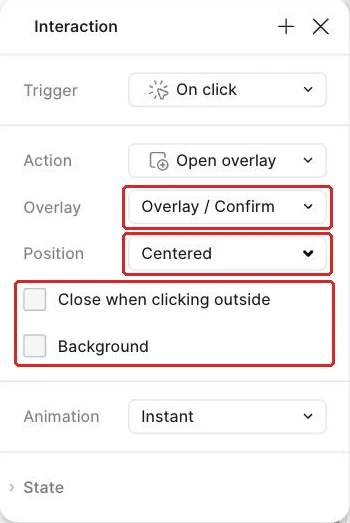
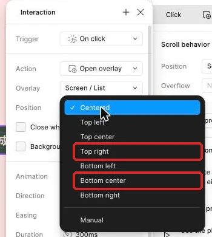
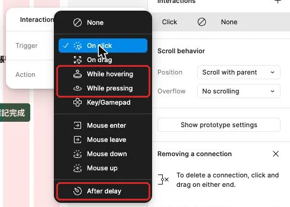

讓確認彈窗能開啟、取消、確認與交換
工作室行政人員準備完成任務時，需要在保留詳情背景的情況下確認選擇，並能安全取消或看見完成結果。
把做好的彈窗接回任務詳情
工作室行政人員已經能進入「整理交付包」詳情並返回清單。現在要把「標記完成」接上確認步驟：彈窗保留詳情背景，取消回到原處，確認後看見完成狀態與成功提示。
這一頁會接著使用轉場與狀態動畫那一頁串好的完整流程，以及先前做好的確認彈窗、完成後清單、成功提示與詳情按鈕。沒有這些成果時，先依該頁的本堂規格表補做，約需二十到三十分鐘。接著開啟本堂起始材料，核對這些畫面與圖層；完成互動後，再用本堂完成檢查表分別走過取消、確認與外側關閉。
本頁還會做三種 Overlay（彈層）：交換內容的說明選單、從清單底部進入的 Bottom sheet（底部面板），以及顯示後自己關閉的成功提示。這三種例子都讓暫時內容疊在原畫面上。
Overlay 保留背景，Navigate 換掉整張畫面
這一節先分清楚 Open overlay、Close overlay、Swap overlay 與 Navigate to。選擇哪個 Action，取決於使用者是在原工作上暫時處理一件事，還是要前往另一張完整畫面。
例如，行政人員在整理交付包詳情按「標記完成」時，仍需要看得出自己正在處理哪一筆任務。Open overlay 會把確認彈窗疊在詳情上，背景仍可辨認；按取消使用 Close overlay，彈窗消失後回到原詳情；按確認則用 Navigate to 前往完成清單，因為這一步代表任務狀態與主要畫面都已改變。
| Action | 解決的工作情境 | 本頁例子 | 預期結果 |
|---|---|---|---|
| Open overlay | 在目前畫面上暫時顯示內容 | 開啟確認彈窗、說明選單、排序面板、成功提示 | 背景保留，彈層出現在指定位置 |
| Close overlay | 結束目前彈層 | 取消確認、關閉說明、收起成功提示 | 回到開啟彈層前的背景 |
| Swap overlay | 在原位置換成另一個彈層 | 任務說明換成詳細說明 | 背景與彈層位置保留，內容被替換 |
| Navigate to | 前往另一張完整畫面 | 確認後到完成清單 | 原畫面換成有完成狀態的畫面 |
Swap overlay 必須從已開啟的彈層內觸發，才會在原位置交換另一個彈層；從一般畫面觸發時，效果接近整頁切換。它的返回紀錄規則與整頁 Navigate 不同，因此回到前一個彈層時，再用一個 Swap 明確指定。
Overlay 的位置也是訊息的一部分。確認彈窗用 Centered，小型說明選單用 Top right，排序 Bottom sheet 用 Bottom center，成功提示用 Top center。Manual 表示相對於觸發按鈕的偏移；本頁直接使用四個預設位置，讓出現位置對應內容用途。
背景遮罩能把注意力集中到彈窗，同時保留原畫面線索。Close when clicking outside 適合可取消的確認情境；使用者點遮罩即可回到詳情。若操作需要強制做出選擇，設計上就保留清楚的回應按鈕，並說明關閉規則。
示範：完成確認彈窗的三條路徑
這一節把詳情、確認彈窗與完成清單接起來。先依規格表核對名稱與設計值，再逐條建立互動；每完成一條就用 Preview 看結果。
| 類別 | 圖層或設定 | 本堂值 |
|---|---|---|
| 詳情熱區 | Button / Complete（標記完成按鈕） | 將既有 On click → Navigate to Screen / List Done 改成 Open overlay |
| 確認彈窗 | Overlay / Confirm（確認彈窗） | W320；Hug 高；圓角 8 |
| 彈窗內容 | Title、Body、Actions | 垂直排列；Gap 16；Padding 24 |
| 彈窗位置 | Position | Centered |
| 背景遮罩 | Background（勾選） | 黑色；25% |
| 外側關閉 | Close when clicking outside | 開啟 |
| 取消熱區 | Button / Cancel（取消按鈕） | Close overlay |
| 確認熱區 | Button / Confirm（確認完成按鈕） | Navigate to 完成清單 |
| 完成畫面 | Screen / List Done（完成清單） | 只顯示整理交付包已完成；上方顯示成功 Toast |
| 成功提示 | Toast / Success（成功提示） | 「任務已完成，已移到完成清單」 |
- 在 Layers 選取詳情中的
Button / Complete（標記完成按鈕）外框。做完會看到完整按鈕成為原型熱區。 Button / Complete已有一條 On click → Navigate toScreen / List Done的連線。點開它，把 Action 改成 Open overlay，不要另加第二條。做完會保留一條點擊互動。- 在 Overlay 欄位選
Overlay / Confirm（確認彈窗）。做完會看見詳情按鈕連到彈窗 Frame。

Overlay / Confirm- 在 Overlay 設定中把 Position 選成 Centered。做完後，彈窗會以畫面中央為基準出現。
- 勾選 Background（預設沒有勾），再依規格表設定遮罩顏色與透明度。做完後，詳情仍可辨認，注意力會集中在彈窗內容。
- 開啟 Close when clicking outside。做完後，點彈窗外的遮罩區可關閉彈層。
- 從「完成一筆任務」流程開啟 Preview，進入整理交付包詳情並按標記完成。做完會在詳情上方看到確認彈窗。
- 點擊遮罩，觀察彈窗關閉。做完後，畫面會回到同一筆整理交付包詳情。
- 回到編輯畫布，依按鈕文字分辨兩顆按鈕，先在 Layers 把取消按鈕命名為
Button / Cancel。選取它並設定 On click 與 Close overlay。做完後，取消動作會直接關閉當前彈層。 - 再次預覽並按取消。做完後，詳情標題、說明與期限仍保持原內容。
- 依按鈕文字分辨確認按鈕，先在 Layers 把它命名為
Button / Confirm。選取它並設定 On click、Navigate to，目的地選Screen / List Done（完成清單）。做完會看到確認動作前往另一張完整畫面。 - 將這條切換保持 Instant。做完後，確認結果會立即出現，便於先核對內容。
- 從登入完整操作到確認彈窗，按下確認完成。做完只會看見整理交付包已完成，畫面上方同時顯示成功
Toast。
三條路徑的差別要能用結果說明：外側關閉與取消回原詳情，確認則前往 Screen / List Done，並看見上方的成功 Toast。每個熱區只執行一個動作；下一節會把成功提示改成獨立 Overlay，讓它顯示後自己收起。
跟著做：交換說明，再從底部打開排序
現在把提示減少，完成兩種不同位置的彈層。第一段練習 Swap overlay 的來源條件；第二段建立 Bottom sheet，讓排序選項從清單底部出現。
| 類別 | 名稱或設定 | 本堂值 |
|---|---|---|
| 選單 | Overlay / Menu（任務說明選單） | Frame W 280；Vertical；Padding Space 16；Gap Space 12；Fill Card；1 px Border 外框；圓角 8 |
| 選單內容 | 標題、內文、按鈕 | 標題套 Type / Section title；內文套 Type / Body、Fill container、Auto height；一顆 Button 使用處設為 Secondary，Label「檢視說明」 |
| 說明 | Overlay / Help（詳細說明） | W 280；Hug 高；Fill Card；1 px Border 外框 |
| 選單位置 | Position | Top right |
| 選單交換 | Action | Swap overlay |
| 排序面板 | Overlay / Sort（排序底部面板） | W402；Hug 高；Fill Card；1 px Border 外框；圓角 8 |
| 排序內容 | 標題與選項 | 排序方式；期限最近、期限最晚 |
| 面板位置 | Position | Bottom center |
| 面板動畫 | Animation | Move in；由下而上 |
- 依規格表建立
Overlay / Menu（任務說明選單）。加入標題、內文與一顆Button使用處。完成後，選單會以Card底色與外框包住自動增高的內容。 - 複製選單為
Overlay / Help（詳細說明）。直接選取 Menu 內文那一層，把文字改為「先核對內容與期限，再標記完成。」完成後，較長文字會推高彈層。 - 在詳細說明加入「關閉」按鈕。完成後，彈層有明確的結束動作。
- 在詳情的
Top Bar內，把「說明」按鈕放在標題之後的右側。設定 Open overlay 到任務說明選單。完成後，頁首右側的按鈕會先開啟第一個彈層。 - 將選單 Position 設為 Top right。完成後，選單會出現在詳情右上區域。

- 在任務說明選單內，把「檢視說明」設定為 Swap overlay 到詳細說明。完成後，交換動作的來源位於已開啟彈層內。
- 將詳細說明的關閉按鈕設定為 Close overlay。完成後，關閉會回到原本的任務詳情。
- 在 Preview 依序開啟選單、交換成詳細說明、關閉彈層。完成後，背景始終是整理交付包詳情，兩個彈層位置維持一致。
- 回到待處理清單，把「排序」按鈕放在
Header / Fixed右側。若尚未做頁首，先放在清單標題右側。完成後，清單有明確入口可叫出排序選項。 - 從新 Frame 建立
Overlay / Sort（排序底部面板），避免複製 Menu 時把 Swap 互動一起帶入。依規格表加入「排序方式」標題與兩個選項；若已經複製 Menu，先刪掉一起複製來的互動。完成後，排序面板只保留這一節需要的互動。 - 將排序按鈕設定為 Open overlay 到排序底部面板。完成後，按鈕與面板之間會出現原型連線。
- 將面板 Position 設為 Bottom center。完成後，面板會貼齊預覽畫面的底部中央。
- 將 Animation 設為 Move in，方向選由下而上。方向箭頭的樣子以畫面為準，用 Preview 確認面板從底部進入。
- 為面板加入 Close when clicking outside。完成後，使用者可以點外側回到清單。
- 在目前選取的選項左側放
Icon / Check使用處，未選取的選項不放。排序選項在這個原型裡不需要互動；完成後，面板會清楚顯示目前狀態。 - 在 Preview 開啟排序面板，觀察清單背景、面板位置與進入方向。完成後，能用「暫時調整清單顯示方式」說明為何使用 Bottom sheet。
確認彈窗放在中央；任務說明靠近右上入口；排序面板由底部進入。三者都保留原畫面，位置則回應內容用途。
讓成功提示出現後自己收起
完成任務後，行政人員需要知道操作已成功，又不希望一條提示長時間遮住清單。這一節先移除完成清單內原本的提示，再把成功提示做成 Top center 的 Overlay，並把延遲關閉設定在提示 Frame 本身；提示顯示一小段時間後，就會回到可操作的完成清單。
| 類別 | 圖層或設定 | 本堂值 |
|---|---|---|
| 成功提示 | Toast / Success | 「任務已完成，已移到完成清單」；Hug 寬高 |
| 顯示位置 | Position | Top center |
| 顯示時間 | Trigger | After delay；約 2 秒，單位以畫面為準 |
| 收起動作 | Action | Close overlay |
- 先把
Screen / List Done上原本那個Toast使用處刪掉，之後改由彈層出現。做完後，完成清單只保留持續顯示的任務結果。 - 再插入一個
Toast使用處放在畫面外，改名為Toast / Success（成功提示）。它是元件使用處，可以直接當 Overlay；做完會有一個可單獨作為彈層目的地的提示。 - 回到完成清單，新增一個用來測試提示的「顯示完成訊息」按鈕。做完會有明確的開啟入口。
- 選取按鈕，在 Prototype 的 Interactions 按 ＋。做完會新增一條互動。
- 把 Action 設為 Open overlay，目的地選成功提示。做完會看到按鈕連到提示 Frame。
- 將 Position 設為 Top center。做完後，提示會從畫面上方中央顯示。
- 選取成功提示最外層 Frame，在 Prototype 的 Interactions 按 ＋。做完會把下一條互動加在提示本身。
- 將 Trigger 設為 After delay。做完會出現延遲時間欄位。

- 依規格表填入約兩秒的時間。做完後，右側會顯示這段等待時間；欄位單位以你看到的畫面為準。
- 將 Action 設為 Close overlay。做完會形成「提示出現、等待、關閉」的完整行為。
- 在 Preview 按「顯示完成訊息」。做完會先看到提示，再看到它自動收起。
- 提示收起後立刻操作完成清單。做完會確認清單沒有殘留遮擋，按鈕仍能正常使用。
After delay 的互動要放在提示 Frame，而非放在開啟提示的按鈕上。按鈕負責開啟，提示負責計時與關閉，每個熱區仍只有一個清楚動作。
「顯示完成訊息」按鈕只用來單獨確認提示會出現又收起。真正完成任務時，使用者按下確認完成就會進入完成清單，不會再去按另一顆按鈕；所以最後要把開啟提示的動作移到完成清單本身，讓提示在進入畫面時自動出現。
- 選取
Screen / List Done最外層 Frame，在 Prototype 的 Interactions 按 ＋。做完會把互動加在完成清單畫面本身。 - 將 Trigger 設為 After delay，填入欄位允許的最短時間。做完後，一進入完成清單就會觸發下一個動作。
- 把 Action 設為 Open overlay，目的地選成功提示，Position 設為 Top center。做完後，完成清單會自己開啟提示。
- 刪除「顯示完成訊息」按鈕。做完後，完成清單不會留下只供測試的按鈕。
- 從登入完整操作到確認彈窗，按下確認完成。做完會進入完成清單，先看到成功提示，約兩秒後提示自動收起。
最後再觀察提示消失前後的閱讀順序。提示出現時，文字要能直接說明哪個動作成功；提示收起後，完成清單只保留已完成的「整理交付包」，讓結果也能從持續顯示的內容確認。這樣即使使用者剛好移開視線，也能從清單內容確認任務已完成。
看兩種確認流程，判斷哪一種讓人知道自己在哪裡
版本一按「標記完成」後，用 Navigate to 前往一張只有白色彈窗的完整畫面。按取消又 Navigate 回清單，原本的整理交付包詳情消失；按確認則到完成清單。使用者在彈窗出現時看不出正在處理哪一筆任務。
版本二用 Open overlay 把確認彈窗放在整理交付包詳情上，背景遮罩降低干擾但仍看得到任務。取消與點擊外側都關閉彈層，確認才 Navigate 到完成清單。請判斷哪一版較符合確認情境，並從背景、取消結果與確認結果說明。
看完自己的判斷再展開
版本二較符合。確認是原任務上的暫時決定，保留詳情背景能維持脈絡；取消與外側關閉都回到同一筆詳情，確認後才前往有完成狀態的完整畫面。版本一把暫時內容做成整頁，取消又回錯層級。
卡住時，先看 Action 的來源與結果
這一節將常見問題對回 Action、位置與內容。先找出是哪個熱區觸發，再看它目前位於一般畫面或已開啟彈層，通常就能判斷應使用 Open、Close、Swap 或 Navigate。
| 看到的現象 | 通常的原因 | 怎麼修 |
|---|---|---|
| 確認彈窗出現時背景消失 | 完成按鈕使用 Navigate to | 改為 Open overlay，目的地選確認彈窗 |
| 按取消後回到登入或清單 | 取消按鈕設定了頁面目的地 | 改用 Close overlay，讓原詳情重新可操作 |
| 點彈窗外側沒有關閉 | 外側關閉尚未開啟，或點在彈窗範圍內 | 開啟 Close when clicking outside，再點遮罩區測試 |
| Swap 看起來像整頁切換 | 交換動作從一般畫面觸發 | 先 Open 任務說明選單，再從選單內觸發 Swap |
| 成功提示一直留在畫面 | After delay 加在開啟按鈕，或 Action 不是 Close overlay | 選提示最外層 Frame，重設延遲與關閉動作 |
| 排序面板從錯誤方向進入 | Move in 方向選反 | 在 Preview 觀察起點，再改為由下而上 |
換你做：你的題目
從你的畫面清單挑出這次對應的畫面。
把確認、底部面板與自動收起的成功提示，套用到你一路完成的預約、點餐或會員 App。
三個題目的範例（可以照做，也可以依你的需求改）
| 預約 | 點餐 | 會員 |
|---|---|---|
| 為「送出預約」做確認彈窗；Bottom sheet 是「篩選服務」，內容包含小型犬、中型犬、大型犬與貓；成功提示文字是「預約成功」。 | 為「送出訂單」做確認彈窗；Bottom sheet 是「客製選項」，內容包含冰熱、甜度與加購；成功提示文字是「訂單已送出」。 | 為「確認兌換」做確認彈窗；Bottom sheet 是「排序方式」，內容包含點數低到高與最新上架；成功提示文字是「兌換成功」。 |
要達成的條件：
- 從送出或確認動作開啟確認彈窗，背景保留目前處理的服務、品項或兌換品。
- 取消後回到原畫面，已填或已選內容保持原狀。
- 確認後前往結果畫面，狀態文字清楚寫出結果。
- 點擊彈窗外側有一個事先決定且能說明理由的結果。
- 底部面板的標題與內容完全符合上表，不增加需求頁沒有的欄位。
- 面板由畫面底部進入，位置與進入方向一致。
- 成功提示位於畫面上方，顯示後會自動收起。
- 每個熱區只執行一個動作。
- 寫一句理由，說明你的做法回應了需求頁裡店主或使用者的哪一句話（引用原句）。
合格的結果要能通過以下自我檢查：
- 開啟確認彈窗時，仍能辨認正在處理哪個服務、品項或兌換品。
- 取消、確認與外側點擊三條路徑各有明確結果。
- 確認結果不只換顏色，也有與題目一致的成功文字。
- 底部面板的內容可直接對回需求頁，沒有引用資料表以外的欄位。
- 成功提示出現後會自行關閉，關閉後原畫面仍可操作。
- 從流程起點重跑時，確認彈窗、底部面板與成功提示不會互相遮蔽或留在畫面上。
- 理由引用的原句真的在需求頁裡。
真的卡住再看：提示
先寫下三個元件各自的預期結果：確認彈窗處理決定、底部面板處理暫時選項、成功提示只回報結果；再逐一檢查開啟來源、位置與關閉方式。
讓暫時決定有清楚的來處與去向
你已經把整理交付包的確認彈窗接成三條可觀察路徑：外側關閉與取消回到原詳情，確認前往有完成狀態的清單。你也完成了從已開啟選單交換說明、由底部進入的排序面板，以及從畫面外元件使用處顯示後自己收起的成功提示；完成清單不再常駐 Toast，四種彈層都保留原工作脈絡，只在完成主要決定時切換完整畫面。
下一頁會把待處理清單加長，讓內容在固定高度內垂直捲動，並處理固定頁首、底部導覽與漂浮按鈕。這一頁建立的排序面板會繼續依附在清單上，因此清單捲動時，開啟面板仍要從畫面底部出現。
想一想：為什麼確認彈窗的取消適合 Close overlay，而成功提示適合 After delay 後 Close overlay？
看參考答案
取消代表使用者主動放棄暫時決定，所以按下按鈕後立刻關閉；成功提示只負責短暫回報結果，讓它在一段時間後自動關閉，可以把操作空間還給完成清單。
完成條件：
- 整理交付包的確認彈窗可開啟、取消、外側關閉與確認完成。
- 任務說明從已開啟選單交換到詳細說明，關閉後回到原詳情。
- 排序 Bottom sheet 由清單底部進入，位置與用途一致。
- 自選題目的成功提示會自動收起，確認與底部面板符合需求頁。
本堂查證來源
來源查證：2026-11-02。